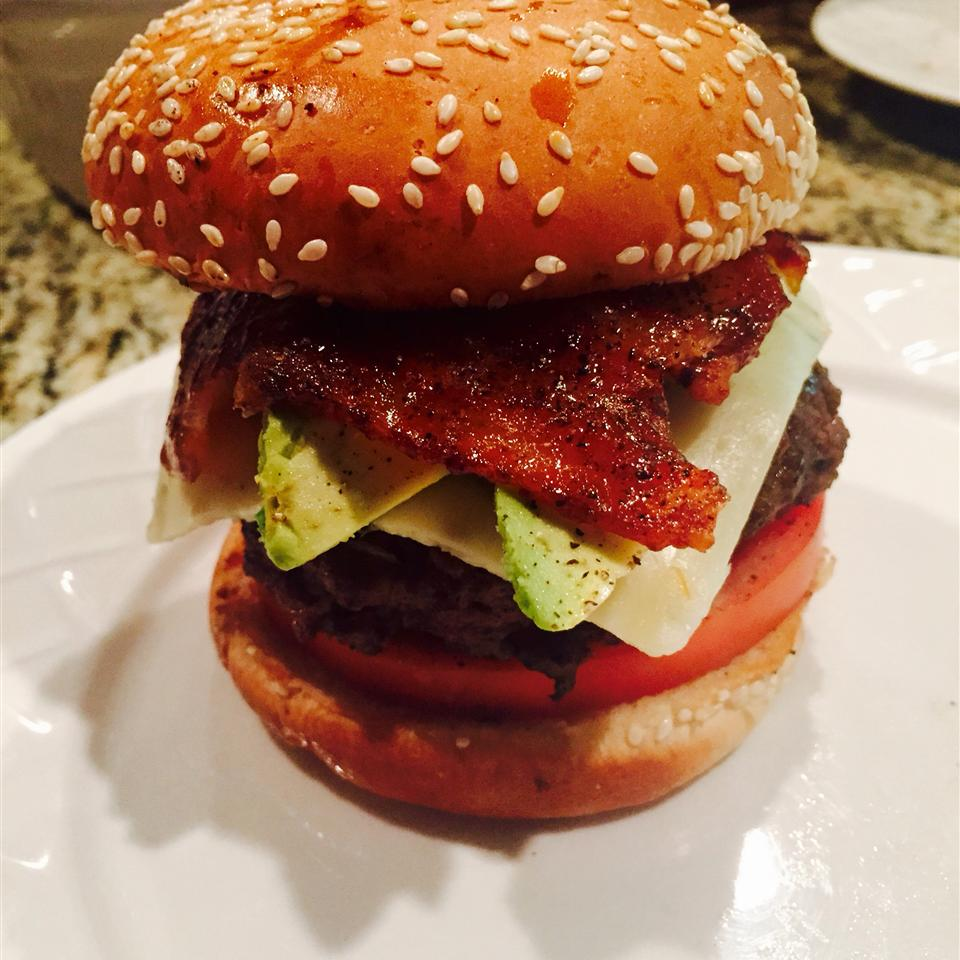

Moms Burger

Description
Moms Big Burger, this burger will defenitly have you running to the grill a couples times before you
start to feel its effect. Moms Burger is a great recipe to follow on Game Nights at home. One burger can
feed two people at once. Moms Burger is packed with beef, cheese, tomato, brioshe buns. Better hide your
mom the whole town is going to want a bite or two out of it.
ingredients
- 2 pounds lean ground beef
- 1 (1 ounce) envelope dry onion soup mix
- ½ cup water
- 2 cloves garlic, chopped
- 1 tablespoon hot pepper sauce
- 1 pinch chili powder
- ¼ teaspoon ketchup
- ¼ teaspoon prepared yellow mustard
- 1 pinch ground black pepper
- 4 roll (blank)s cracked wheat hamburger buns
- 4 slices pepperjack cheese
- 1 avocado - peeled, pitted and sliced
- 1 bunch green onions
Steps
- Preheat the oven's broiler.
- In a large bowl, mix together the ground beef, onion soup mix, water, garlic, hot pepper sauce, chili powder, ketchup, mustard and pepper using your hands. Pat into 4 large thick patties. Place them on a broiler pan.
- Broil the burgers for about 15 minutes per side, or until well done. Place buns on the broiler pan and toast briefly. Place whole green onions on the broiler pan at the same time, and just toast until limp.
- Place burger patties onto the bottom halves of the buns and top each one with a slice of cheese and some avocado slices. Top with the top buns. Serve with green onions.
Nutrition Facts
Per Serving: 785 calories; protein 57.1g; carbohydrates 33.9g; fat 47g; cholesterol 188.6mg; sodium 1238.5mg.